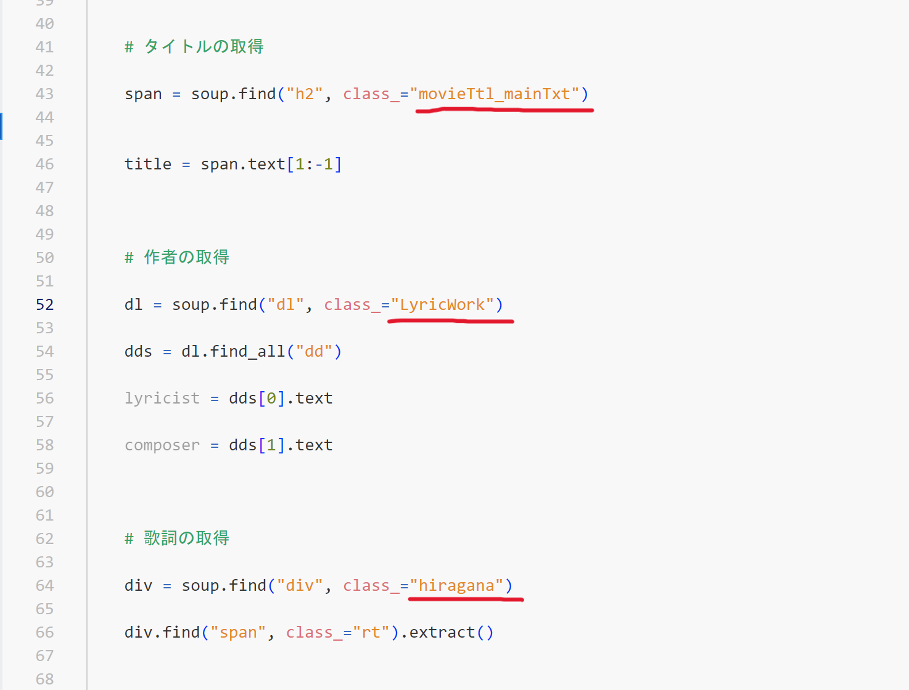
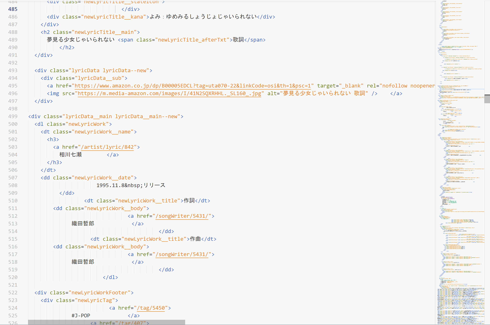
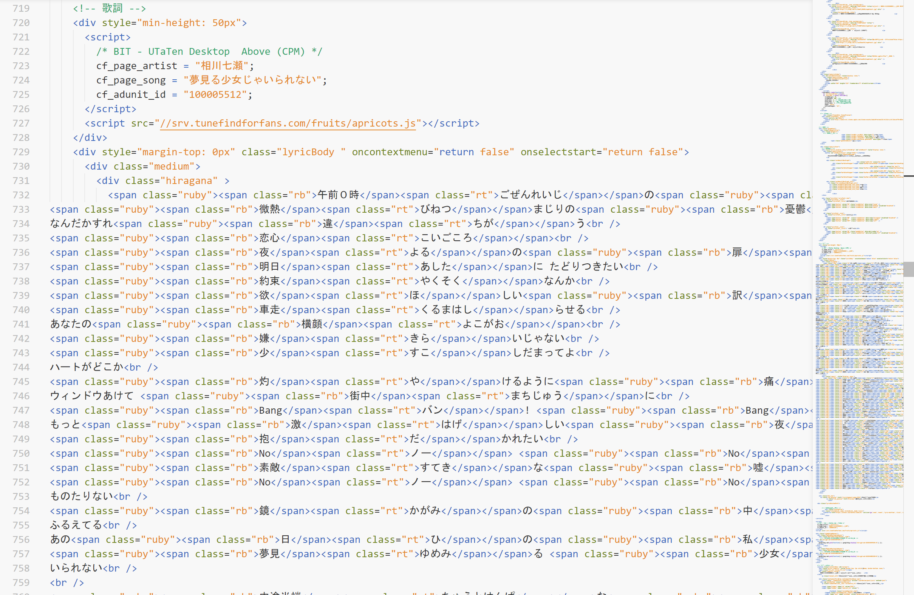

私たちのグループは、一部の歌詞を入力すると
該当する曲の「曲名」や「歌詞」が表示される仕組みを作ることはできないかと考えました。
そのためにまず、歌詞検索サイトのリンクからPython上で歌詞を表示させる仕組みを
「スクレイピング」で実現させる方法を試しました。
参考サイトを基にbeautiful soupというライブラリをインポートしスクレイピングを行いました。
サイトをコピペしたコードが以下のようになります。
- import requests
- from bs4 import BeautifulSoup
-
- print("歌手名入力")
- band = input()
- print("歌名入力")
- song = input()
-
- def main():
- # URL の指定
- url = "https://utaten.com/lyric/" +str(band) + "/"+str(song)
- # ページの取得
- html = requests.get(url).text
- # HTML の保存
- with open("config.html", mode="w", encoding="utf-8") as file:
- file.write(html)
-
- soup = BeautifulSoup(html, "html.parser")
- article = soup.find("article", class_="contentsBox movie_box")
-
- # タイトルの取得
- span = article.find("span", class_="movieTtl_mainTxt")
- title = span.text[1:-1]
-
- # 作者の取得
- dl = soup.find("dl", class_="lyricWork")
- dds = dl.find_all("dd")
- lyricist = dds[0].text
- composer = dds[1].text
-
- # 歌詞の取得
- div = soup.find("div", class_="hiragana")
- div.find("span", class_="rt").extract()
-
- print(title)
- #print(lyricist, composer)
- print(div.get_text())
-
- #書き込み用ファイルの生成
- path_w = "kashi.txt"
-
- s = div.get_text()
-
- with open(path_w, mode='a') as f:
- f.write(s)
-
- if __name__ == '__main__':
- main()
サイト通りに実行してみると、「歌手名」と「歌名」を入力した段階でエラーが発生してしまいました。
その後、道用先生の助けを借りて、参考サイトと現在のうたてん(歌詞検索サイト)のタグが異なっていることが判明しました。
この部分↓

そのため、曲名や作曲者、歌詞を囲んでいるタグの中身を、HTMLのソースコードから探し出し、
それっぽいものをひとつずつ打ち込んでいけば成功するかもしれないとアドバイスをいただきました。
↓この辺から該当しそうなタグを探す


そして実践してみた結果
最終的に歌詞を表示させることはできませんでした。
しかし、課題を通してスクレイピングとは何か、スクレイピングをするために使うライブラリとは何かなど
様々なことを学ぶことができました。
また、今回は課題提出の時間までに間に合わず完成させることができなかったのですが、
他のサイトを参考にしてみたり、タグを片っ端から入れてみたりすれば完成させられるかもしれないので
時間があるときにやってみようと思います。